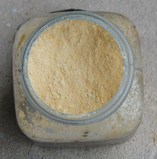

Jaune
de Naples
et autres jaunes d'antimoine

Sa teinte est assez éloignée des imitations actuelles (généralement une
couleur azoique
adjointe de blanc de zinc ou de titane,
voir photo ci-contre).
L'original n'a
pas leur blancheur. A l'état pigmentaire, il ressemble à une ocre bien
ferreuse qui aurait été teintée
de soufre jaune vif. Il est en principe semi-transparent (voir
cependant note ci-dessous).
Lecture conseillée :
Le jaune
de Naples sur Pourpre.com
L'utilisation de ce pigment serait très ancienne (chaldéenne selon la
légende), bien antérieure de toute façon à l'exploitation napolitaine. Anne
Varichon mentionne un usage par des verriers d'Egypte et de Mésopotamie
autour de 2500 BC.
Il aurait été fabriqué à partir de plomb et d'oxyde d'antimoine
(le sulfate de chaux n'est mentionné que pour la peinture, mais nous ignorons
s'il était absent de la version naturelle antique destinées aux verres
et glaçures).
Sous cette forme simple, il est aussi réputé pour son
instabilité en mélange. Selon la même source, Rome l'aurait remplacé par du
stannate de plomb... avant qu'il ne retrouve sensiblement au Moyen-âge sa composition première.
Il a ainsi été apprécié par des peintres jusqu'au XIXème siècle.
Cennini le nommait "giallorino", d'autres, plus
tard, "giallolino", ce qui ne signifie d'ailleurs rien de bien précis (cf.
giallolino).
En poterie, les combinaisons simples d'oxydes de plomb et d'antimoine peuvent encore être
rencontrées dans les glaçures où on leur adjoint, là encore, un oxyde d'étain
stabilisant.
Tuf
et fabrication classique du jaune de Naples
D'après un jeune peintre napolitain dont nous avons recueilli le témoignage, les
artistes de la région se serviraient souvent du tuf (tuffo)
volcanique local pour fabriquer des pigments. Par ailleurs, ce minéral est
employé comme pierre de taille pour la construction des habitations (tufeau).
L'extraction et/ou la fabrication originelle du jaune de Naples demeure un
mystère et constitue encore aujourd'hui un objet de polémiques.
Il semble qu'il
ne s'est pratiquement jamais agi d'un pigment naturel mais bien d'une synthèse
humaine, ce que semblent confirmer les premières synthèses (voir
ci-dessus). Les procédés de fabrication sont d'ailleurs innombrables et
s'additionnent parfois d'une touche de malhonnêteté (voir ci-dessous
Intérêt des imitations, faux Naples).
Notre jeune artiste ne mentait probablement pas : il est probable que le
"minerai brut" du jaune de Naples soit extrait de parties bien spécifiques
d'une masse de tuf asséché (apportant au moins la chaux) ou bien
des solfatares napolitaines (apportant peut-être le soufre, le plomb et
l'antimoine), ou bien les deux car il faut probablement associer plusieurs
composants naturels. Mais qui sait si l'idée de produire ce pigment n'est pas
née, justement, d'un exemple naturel ?
Curieusement, la blanchâtre imitation contemporaine du jaune de Naples ressemble à la
description du tuf napolitain plus qu'à l'authentique pigment, plus ocre, plus
sombre et intense.
Quant à la fabrication telle qu'elle est pratiquée depuis un siècle ou davantage
à partir d'ingrédients purement chimiques, elle est réalisée de différentes
manières, mais nous ne citerons - pour mémoire - que les deux relevées par
Coffinier (1908), qui les tenait de Fougeroux de Boudaroy :
Le mélange est longuement chauffé au creuset, puis lavé, après quoi l'on
adjoindrait le sulfate de chaux (information non confirmée).
Emploi

Malgré la présence conjointe de soufre et de plomb dans sa composition,
le pigment "jaune de Naples" semble fort permanent d'après les sources les plus sérieuses à condition
d'être employé pur. Il vaut mieux l'isoler, ne serait-ce que parce qu'il est
siccatif. Un glacis protecteur
au-dessous, un au-dessus, suivant l'antique procédé, et le tour est joué, à
condition de respecter des temps de siccativation corrects.
Notons quand même que le mélange avec des
couleurs organiques pourrait poser
moins de problèmes qu'avec des pigments minéraux.

André Béguin
décrit le jaune de Naples de la manière suivante (t. 2, p. 693) : "Lourd
et couvrant,
fixe et solide s'il est bien préparé", ce qu'il n'a pas toujours été,
semble-t-il. D'autres auteurs le considèrent comme semi-transparent.
Il a tendance à réagir (noircissement) en présence des
métaux qu'il ne contient pas lui-même. Attention aux
spatules notamment (mais l'acier véritable ne
poserait pas ce problème selon André Béguin). Les tubes de jaune de Naples sont
vernis à l'intérieur pour éviter tout contact avec l'étain. Signalons quelques
petites incertitudes concernant un passage isolé du texte très complet que ce
très remarquable auteur consacre à ce pigment. Après avoir noté sa réactivité au
fer, à l'étain et au zinc, il affirme : "(...) on peut très bien le mélanger
avec des pigments métalliques puisque ceux-ci sont préparés avec les oxydes des
mêmes métaux". Ceci est un peu surprenant.
Certes, avec l'antimoine, le plomb et le calcium qu'il contient,
le jaune de Naples bat un "petit record du nombre de métaux", mais il ne
faudrait pas oublier que d'autres métaux sont extrêmement courants sur les
palettes. Les couleurs au zinc et au fer, notamment. Comment réagissent-elles ?
Ce très court passage du Dictionnaire technique de la peinture est
difficile à comprendre, alors que l'ensemble de l'article consacré au jaune de
Naples est lumineux et très pertinent.
Xavier de Langlais émet comme nous quelques réserves. Il décrit ainsi le
jaune de Naples : "couvrant et siccatif [,] très fixe, et relativement stable
dans les mélanges à condition d'être bien préparé". Bien préparé, il n'est
donc selon lui que "relativement
stable". Ce qui
nous pousse à réitérer, comme d'autres (car M. de Langlais n'est pas le seul à
demeurer dubitatif), le conseil de ne pas trop mélanger cette couleur sinon à
petites doses avec des pigments dépendant de la chimie organique.
Intérêt
des imitations,
faux Naples
Nul, parmi nous ni autour de nous, n'a utilisé le jaune de Naples
authentique (merci de nous faire part de
toute expérience).
L'imitation habituelle de cette couleur n'est pas dépourvue d'intérêt en soi, même
si elle est éloignée de l'original (trop blanchâtre en général). Selon plusieurs peintres, il serait
plus intéressant de l'altérer légèrement que de la mélanger
massivement à
d'autres pigments. Certains fabricants opportunistes se sont saisis dès le XIXème
siècle de ce genre
d'opinions et n'ont pas hésité à proposer différentes créations
très originales, fruits de simples mélanges à d'autres pigments : "jaune de Naples rouge", "jaune de Naples
vert". Incroyable mais vrai ! Nous n'ajouterons qu'un commentaire à ce sujet : ce genre de pratiques désigne
un état d'esprit que chacun jugera.
Autres jaunes d'antimoine
Le jaune Mérimée, nommé parfois jaune minéral,
une appellation qui prête à confusion (cf.
jaune Turbith) et qu'il vaudrait mieux oublier, a donné
lieu à différents procédés de fabrication. Mérimée mettait à contribution une
petite quantité de bismuth que d'autres ingénieurs éliminèrent. Tout cela a
donné une série de jaunes Mérimée toxiques aux compositions variables autour du
thème de l'oxyde d'antimoine adjoint de quantités invraisemblables de plomb sous
formes diverses.
Le jaune minéral ou jaune de Turner, sorte de
chlorure de plomb obtenu à l'aide de sel (de table), de minium et d'eau, est
particulièrement toxique. Comme la plupart de ses cousins les pigments nocifs,
cette couleur-gangster a souvent changé de nom (jaune de Kassler, jaune de
Cassel, jaune de Paris, jaune de Vérone, etc.). André Béguin nous rappelle que
certaines variétés toxiques d'oxydes de plomb sont présentes dans la nature et
qu'elles ont pu servir à l'élaboration de cette couleur (une élaboration dont
les modalités sont très variables) que l'on trouve encore - heureusement
parcimonieusement - dans l'offre commerciale en France. Pour mieux cerner le
produit, citons cet auteur : "Ce jaune minéral était assez employé au siècle
dernier, en différentes nuances du jaune clair au jaune brun, pour la peinture
des équipages et des décors. Il était très solide ; on le vivifiait avec un peu
de jaune de chrome [note : un autre pigment toxique]. Il était couvrant
mais noircissait un peu au contact des émanations sulfureuses".
Retour
début de page